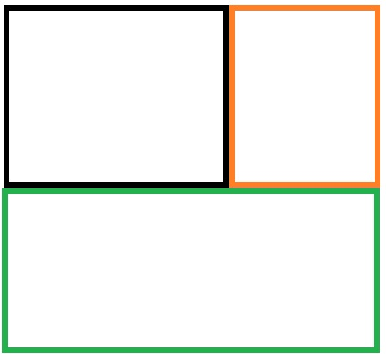

x1,y1,x2,y2 Specifies the coordinates of the top-left and bottom-right corner of the rectangle (shape="rect")
x,y,radius Specifies the coordinates of the circle center and the radius (shape="circle")
x1,y1,x2,y2,..,xn,yn Specifies the coordinates of the edges of the polygon. If the first and last coordinate pairs are not the same, the browser will add the last coordinate pair to close the polygon (shape="poly")